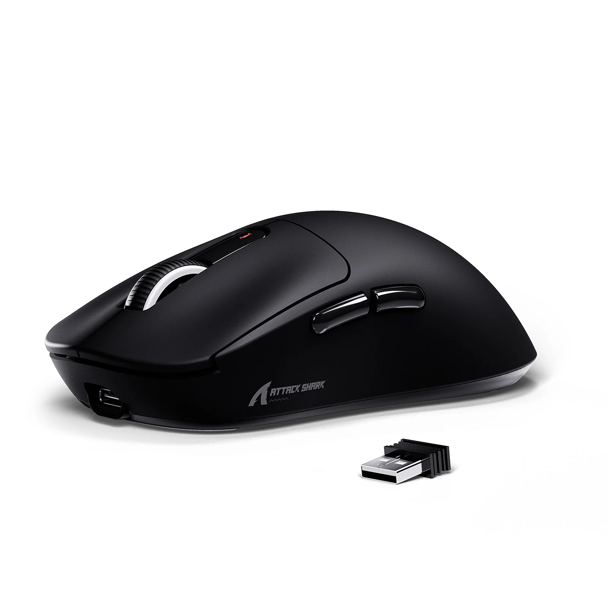

きむちの使用デバイス
-
マウスはAttackShark X3を使用しています！
元々はG Pro SuperLight 2を使用していましたが
Valorantでネオンを使いすぎてマウスホイールが壊れ、
ジェットを使いすぎてサイドボタンが50%の確率で反応しなくなりましたw
それでこちらのAttackSharkX3を使い始めましたが値段がなんと
4,239円でした！ なんとG Proの4分の1以下。。
それでG Proとそこまで大差はないです！
たまに接続が切れますが自分のPCのせいの可能性が高いです。。
